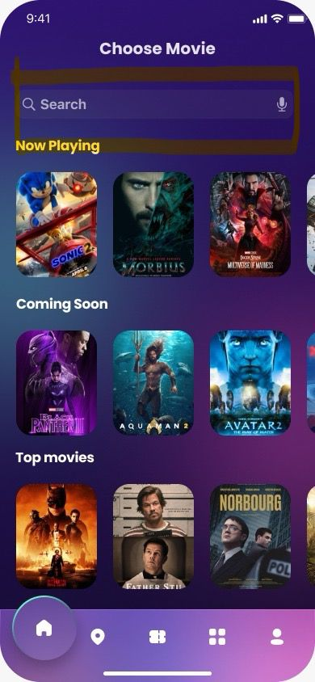

Users need clearer visual cues for interactive elements and system states.
Project Overview
Problem
Moviegoers often face challenges such as long queues, last-minute sold-out shows and confusing booking processes which make securing tickets a frustrating experience. Families and busy professionals, in particular, struggle with coordinating schedules, finding good seats, and ensuring a smooth booking process. Existing ticketing platforms may be slow, clunky, or lack transparency, leading to dissatisfaction among users who value speed, convenience, and clear pricing.
Product
Quick Tix is an E-Movie Ticketing System App which provides a fast, seamless, and user-friendly digital platform for booking movie tickets.
Goal
The goal of the E-Movie Ticketing System is to provide a seamless, fast, and user-friendly digital platform that enables users to browse movies, select showtimes, book tickets, and make payments effortlessly.
Research Overview
I conducted user research on students from GCIT and mothers from outside the institute to understand their movie ticket booking habits, preferences, and frustrations. Initially, I assumed that students prioritized convenience and speed, while parents focused mainly on affordability and family-friendly options. Through interviews and surveys, I found that while these assumptions were mostly accurate, parents also highly valued seat availability and a smooth group booking experience, which I had underestimated. Additionally, students were more frustrated by hidden fees and slow app performance than I initially expected. This research helped refine the E-Movie Ticketing system to prioritize speed, transparency, and ease of use for both groups.
User Painpoints
User Persona
User Journey Map
User Workflow
Story Board
Big picture storyboard
Closeup storyboard


Paper Wireframe

Low Fidelity Wireframe
Site Maps
Usability Findings
I conducted a moderated usability study to evaluate the effectiveness and user-friendliness of the QuickTix mobile movie ticket booking app. The study involved three participants with varying levels of tech familiarity, who were guided through a series of core booking tasks such as searching for movies, selecting seats, and viewing confirmations. The goal was to identify usability issues and gather insights into user behavior.
The layout of movie details needs better spacing and hierarchy.
Feedback during navigation and booking cancellation must be improved.
Affinity Diagram
Research Study Plan


Mockups
Before usability study
After usability study


High Fidelity Prototype
Accessibility Considerations
Icons such as the search button were initially hard to notice. Increasing icon size and using high-contrast visuals ensures they are easily identifiable for users with low vision or cognitive challenges.
Participants were confused by unavailable seats. Adding distinguishable colors, labels, or tooltips for seat availability helps users with visual impairments or color blindness interpret seat options correctly.
Uncertainty during cancellation and navigation back was common. Providing clear, consistent system feedback (e.g., confirmation messages or progress indicators) supports users with cognitive or learning disabilities by reducing confusion.
Takeaway
Impact: QuickTix reimagines how moviegoers experience ticket booking, offering a seamless, trustworthy, and user-focused platform that eliminates traditional frustrations.
By enabling busy individuals and families to easily browse, select seats, and book tickets with complete transparency, the platform fills a crucial gap in the movie-going experience—one where physical ticket counters and existing online platforms often fall short.
What I Learned
Way Forward: Designing QuickTix helped me understand the unique challenges and emotional needs of moviegoers—particularly the frustration they feel when faced with complex booking processes. It reinforced the importance of empathetic design and user context, especially when building for a diverse audience with varying technical skills.
Through this project, I also saw how critical clear visual cues, intuitive navigation, and transparent information are in encouraging users to complete their booking journey.
Next steps include hosting a design feedback session with diverse user groups to gain additional insights on usability and accessibility needs.
I plan to conduct a second round of usability testing to confirm that key user pain points (like seat selection confusion and lack of feedback) are being addressed effectively.
I'll continue iterating on the booking experience—exploring features like personalized recommendations, family booking options, and better visual feedback based on user responses.